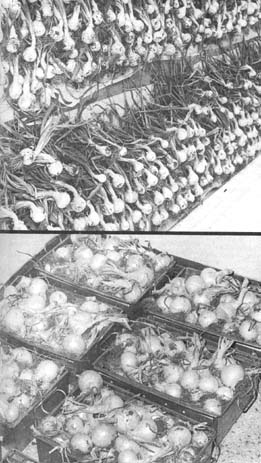

TOP: Cure onions thoroughly before packing them away in ventilated containers. It takes a long time, so don't become impatient. A cool, shady, screened porch where insects can be kept away from the bulbs is satisfactory for this initial curing. BOTTOM: Leave their tops on and store onions in ventilated containers close to the floor in a cool, dark and dry room. Most of the onions shown here are Earl May Seed and Nursery Company's White Sweet Keeper.